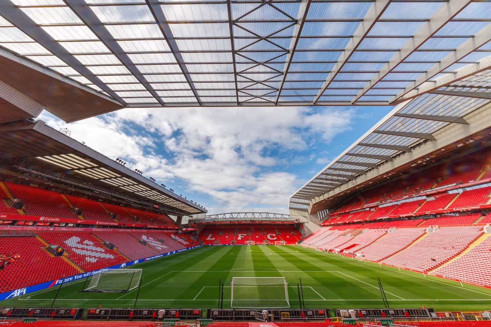

Sinds 1892 van Liverpool F.C.
Over
Anfield is meer dan alleen een stadion – het is het kloppende hart van Liverpool. Met zijn rijke geschiedenis, fanatieke supporters en de legendarische sfeer tijdens wedstrijden, behoort Anfield tot de meest iconische voetbalstadions ter wereld. Wanneer het publiek “You'll Never Walk Alone” zingt, krijg je kippenvel – zelfs als je geen fan bent.